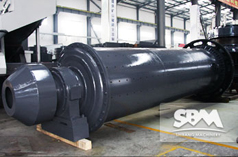
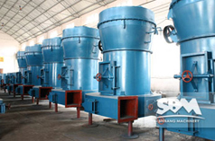

MTW Milling Machine
When it comes to the grinding mill, I believe many people are not unfamiliar, as one of the most common grinding machines, now in many fields has a very wide range of applications. MTW milling machine is one of the most famous a milling machinery equipment, this equipment is the biggest advantage of high production efficiency, low failure rate, but also energy-saving green, coordinated with the green development at present. Experts detailed introduction how to weigh the manufacturers and the prices.
MTW milling machine, short for european version trapezium mill is a very broad frequency device, the device was originally introduced from abroad, after a long period of use, from the gradual development of an industry to use more than one industry, but also from a single mill kinds of materials can gradually milling variety of materials with different attributes.
Select milling machine manufacturers need to focus first and most is the price of the device. This can find a few manufacturers, equipment for the price comparison, if the difference between the larger, then we should carefully consider the price too low is not going to consider, are generally of poor quality products.
Except, of course concerned about the price, the more you want to pay attention to the comprehensive comparative analysis of the equipment from the price, quality, after sale, the manufacturer's strength, etc., so that it can buy cheap equipment, to ensure the stability of production.
Technical Data
| Name & Model | MTW110 | MTW138 | MTW175 | MTW215 | |
|---|---|---|---|---|---|
| Ring Roller Number(pcs) | 4 | 4 | 5 | 5 | |
| Major diameter of roller(mm) | Ф360×190 | Ф460×240 | Ф520×280 | Ф640x 320 | |
| Inner diameter of roller (mm) | Ф1100×190 | Ф1380×240 | Φ1750×280 | Φ2150x 320 | |
| Revolving Speed(rmin) | 120 | 96 | 75 | 65 | |
| Revolving Speed(rmin) | <30 | <35 | <40 | <50 | |
| Final size(mm) | 1.6-0.045, fineness can reach to 0.038 |
1.6-0.045, fineness can reach to 0.038 |
1.6-0.045, fineness can reach to 0.038 |
1.6-0.075, fineness can reach to 0.038 |
|
| Capacity(th) | 3.5-10 | 6.5-15 | 13-20 | 30-45 | |
| Overall dimension(mm) | 8625×7933×8642 | 10920×9470×10227 | 12275×9555×9916 | 14730x 10860x 10341 | |
| Main unit motor | Model | Y280M-6 | Y315M-6 | Y355M2-8 | Y3-355-4-8 |
| Power(kw) | 55 | 90 | 160 | 280 | |
| Rotate Speed(rmin) | 980 | 990 | 740 | 740 | |
| Classifier speed regulating motor (variable frequency motor) |
Model | Y132M-4 | Y180M-4 | Y200L-4 | YVP280M-4 |
| Power(kw) | 7.5 | 18.5 | 30 | 90 | |
| Rotate Speed(rmin) | 1440 | 1470 | 1470 | 1470 | |
| Centrifugal induced draft fan motor |
Model | Y250M-4 | Y315-4 | Y315L2-4 | Y315L2-4 |
| Power(kw) | 55 | 110 | 200 | 315 | |
| Rotate Speed(rmin) | 1480 | 1480 | 1480 | 1480 | |
| Elevator |
Bucket Model | TH210 | TH315 | TH315 | TB315 |
| Motor Model | Y100L2-4 | Y112M-4 | Y112M-4 | Y160M-4 | |
| Motor Power(kw) | 3 | 3 | 4 | 11 | |
| Rotate Speed(rmin) | 1430 | 1430 | 1440 | 1440 | |
| Jaw Crusher | Model | PE250×400 | PE250×750 | PE250×750 | PC1010 |
| Motor Model | Y180L-6 | Y200L2-6 | Y200L2-6 | Y315M2-6 | |
| Power(kw) | 15 | 22 | 22 | 110 | |
| Rotate Speed(rmin) | 970 | 970 | 970 | 990 | |
| Magnetic Vibrating Feeder | Model | GZ2F | GZ3F | GZ4F | GZ5F |
| Power(kw) | 0.15 | 0.2 | 0.45 | 0.65 | |
Related Products
|  Ball Mill |
 Raymond Mill |
 LUM Vertical Roller Mill |